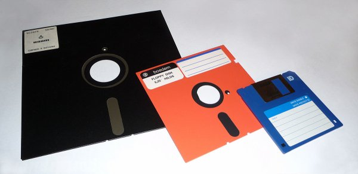
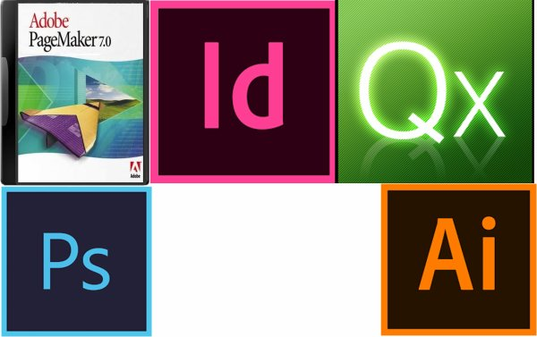
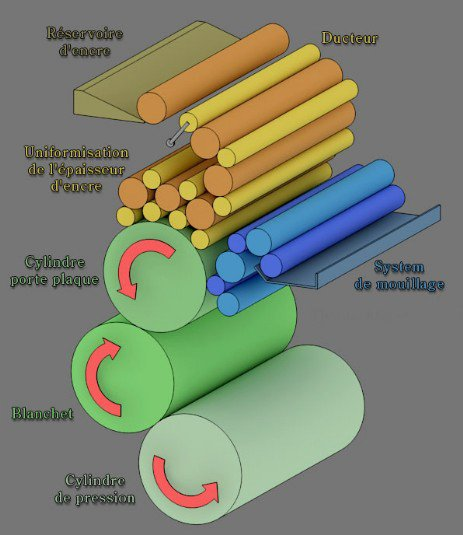
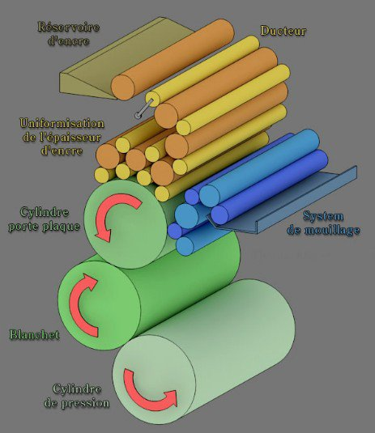

![[ANA JDG] Asterix and the Great Rescue - Megadrive](../vi/6oUXi0ckLmA/default.jpg)
![[ Présentation pour la chaîne Grenier des Joueurs ] JDG Prod](../art/SHAR.6419.583.2.jpg)


On passera aux disquettes pour contenir les fonts (ces disquettes se nomment floppy)

mais c'est bien plus tard qu'on pourra prévisualisé son travail avant de faire de l'impression par la flasheuse, cet prévisualisation se fait sur un écran annexe fait pour la prévisualisation et donc se présentait comme un écran vertical.
Chaque système, chaque gamme avait son langage de commande pour la composition. Les études se faisait en Suisse, elles coutaient chers et étaient très longues, et le matériel coûtait une fortune...tout comme les compositeurs à cause de leur rareté.
On pouvait aussi faire le montage sur table lumineuse mais il fallait un scanner très cher.
En 1984, le premier Mac arrive sur le marché avec sa souris, son interface graphique bousculera le monde de la pré-press. On voyait enfin sa prévisualisation sur un ordinateur.
Bill Gates améliorera donc Word pour Mac (précédemment sur DOS) sous l'acronyme WYSIWYG (What you see, what you get), on voit donc ce qu'on écrit.
Adobe inventera aussi le PostScript qui est un langage de pré-press qui se voudra universelle.
En 1985, Adobe Illustrator arrive sur le marché et est logiciel de dessin vectorielle se basant sur postscript. La première imprimante à interpréteur PostScript arrivera sur le marché, la LaserWriter, elle coûtera 7 000$ mais la première imprimante à laser de Xerox coûtait 500 000$.
Adobe et Xerox fondera la société Aldus et créerons PageMaker, le premier programme de mise en page.
En 1987, la société de Quark invente le logiciel Xpress qui met en danger ceux qui faisait encore de la photocomposition car vraiment plus performant que PageMaker. Ils devront se recycler pour survivre et donc devenir flasheuses (fournir des films pour ceux qui emploient Xpress), capitaliser leur maîtrise technique et donc de devenir un bureau de PAO (ComputerToFilm).
Parlons des logiciels d'illustration vectorielle :
Adobe Illustrator (dérivé de PostScript) est d'abord un logiciel strictement interne chez Adobe, il est juste utilisé pour les polices de caractère.
En 1989, Adobe Illustrator gagne en capacité (on peut enfin dessiner avec) et sort enfin en 1.0 pour aller plus loin dans le dessin vectoriel concurrencé par MacDraw.
Aldus FreeHand créerons un logiciel concurrençant Adobe Illustrator, on sait créer des dégradés facilement. Illustrator et FreeHand se piqueront des idées mutuellement afin de évoluer.
Macromedia rachètera FreeHand en 1994 et Adobe rachètera Macromedia en 2005. FreeHand aura sa dernière version en 2009 et ce sera finit pour ce logiciel.
Depuis 1989, Adobe Streamline était utilisé par quelques créatifs pour la création de logo.
On perdra ce logiciel seul et il réapparaîtra sur Illustrator avec la fonctionnalité « Vectorisation dynamique » (vectoriser une image bitmap) même si la qualité n'est pas optimale.
![[Aide Techniques de reproduction et de transmission des images]Les logiciels du pré-press!](../5252/79895252/pics/3294552926_1_15_1Qq9xWkf.jpg)
Parlons des logiciels d'illustration bitmap :
Adobe Photoshop, développé par les frères Knoll, ne servait à l'époque qu'au travail des niveaux de gris. D'abord, présenté chez les éditeurs de Nikon et Codac qui refusèrent. C'est Apple et Adobe qui diront oui pour éditer Photoshop. Les frères Knoll se désintéressent de Photoshop et créerons la société KAI qui développera les KPT, des filtres pour Photoshop. Malheureusement, le succès fût trop grand et les KPT furent boudé par le public ce qui fera fermé KAI. Actuellement, les frères Knoll travaillent sur les Star Wars.
Un nouveau logiciel est sur le marché depuis 2014, Afinnity, qui est un Photoshop moins cher.
Parlons des logiciels de mise en page :
En 1985 sortira l'Aldus PageMaker. Boudé par les professionnels un premier temps, après le rachat d'Aldus par Macromedia et Adobe, PageMaker sera remplacé par Adobe InDesign.
Les documents de PageMaker pourront être ouvert dans InDesign mais les programmes sont trop différents car PageMaker était plus axé bureautique plutôt que professionnel.
La société Quark inventera Xpress qui conquerra l'ensemble de la profession. Il sera améliorable grâce à des plugins nommés « Xtension » ce qui donnera à Quark une certaine notoriété et seront en situation de monopole. Voulant racheter Adobe, Quark perd énormément d'argent et Adobe rentre en concurrence avec Adobe InDesign. Perdant le monopole, Quark avait trop perdu le sens des priorités en profitant de sa richesse et en délaissant Quark Xpress mais quand InDesign arrive, Quark sort de son délire et cesse de délaisser leur seul produit.
Adobe InDesign aura une béta-publique gratuite qui fera contraste au fait que Quark s'est fermé au public et ses suggestions, tout ce que le public voulait pour Quark Xpress s'est donc retrouvé sur InDesign. Comme Microsoft avec son pack Word,Excel,... Adobe offrira son InDesign avec un Pack comportant aussi Photoshop et Illustrator ce qui mettra InDesign plus en avant que Quark Xpress.

![[Aide Techniques de reproduction et de transmission des images]L’impression numérique!](../5252/79895252/pics/3292987152_1_5_GaCiAXkC.jpg)
![[Aide Techniques de reproduction et de transmission des images]L’impression numérique!](../5252/79895252/pics/3292987152_1_7_2Dll5T7G.jpg)
![[Aide Techniques de reproduction et de transmission des images]L’impression numérique!](../5252/79895252/pics/3292987152_1_9_ZETwiCA3.jpg)
![[Aide Techniques de reproduction et de transmission des images]La sérigraphie!](../5252/79895252/pics/3292987124_1_3_PyScO7iD.jpg)
![[Aide Techniques de reproduction et de transmission des images]La Flexographie!](../5252/79895252/pics/3292987098_1_3_dDH1jNTw.jpg)
![[Aide Techniques de reproduction et de transmission des images]La Flexographie!](../5252/79895252/pics/3292987098_1_7_AjoCWoHr.jpg) 

![[Aide Techniques de reproduction et de transmission des images]L’héliogravure!](../5252/79895252/pics/3292987080_1_3_1vGx2Z1f.gif)
![[Aide Techniques de reproduction et de transmission des images]Les valeurs d’une image bitmap](../5252/79895252/pics/3291019598_1_3_MvXjYKh2.png)
![[Aide Techniques de reproduction et de transmission des images]Le CMJ](../5252/79895252/pics/3291017234_1_3_x67Y7smz.jpg)
![[Aide Techniques de reproduction et de transmission des images]Les 5 systèmes de couleurs principaux](../5252/79895252/pics/3291015422_1_3_9HbWwoMX.png)
![[Aide Techniques de reproduction et de transmission des images]Les 5 systèmes de couleurs principaux](../5252/79895252/pics/3291015422_1_7_wr4tugQv.gif)
Partage